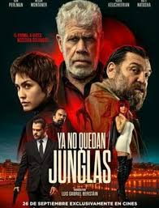

Theo, conegut com "el Gentleman", és un ex soldat estatunidenc l'existència solitària i miserable del qual transcorre entre els seus records d'un passat millor amb la seva difunta esposa i la seva cita habitual dels dijous amb Olga, una prostituta a la qual paga per conversar, recordant qui va ser una vegada i somiant amb el que podria haver estat. Quan Olga és assassinada, cerca una venjança brutal.
El rastre de sang que deixa és seguit per Iborra, una inspectora de policia alcohòlica, i Herodes, un despietat assassí a sou. L'encreuament d'aquests personatges al límit tindrà un abrupte desenllaç quan el present vingui a cobrar-se els deutes del passat.